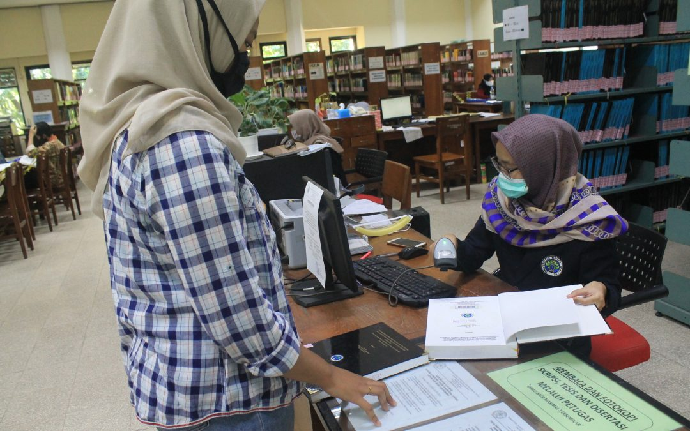

Pinjaman Buku
Pendaftaran Keahlian

Pendaftaran keahlian adalah Percuma. Bagaimana untuk menjadi ahli perpustakaan:
- Mengisi borang keahlian di kaunter
- Borang keahlian juga boleh didapati secara atas talian melalui URL:
- Pengguna yang ingin menjadi ahli perpustakaan perlu melengkapkan borang keahlian yang terdapat di kaunter utama.
- Sila bawa mykad atau mykid semasa mendaftar.
- Semua pengguna (dewasa, kanak-kanak dan pelajar) yang berwarganegara Malaysia akan menggunakan kad pengenalan sebagai kad keahlian.
- Keahlian yang telah tamat tempoh selepas 1 tahun mesti memperbaharui keahlian mereka untuk membolehkan pinjaman bahan dilakukan seterusnya.
Keahlian hendaklah diperbaharui setiap tahun dan terbuka kepada orang awam tanpa had umur.
Proses Keahlian
Pinjaman Dan Pemulangan Buku

Cara Pinjaman:
- Seorang ahli berdaftar dibenarkan meminjam maksimum 6 buah buku dalam tempoh 3 minggu (21 hari).
- Sila tunjukkan mykad/mykid kepada petugas semasa berurusan di kaunter pinjaman.
- Denda akan dikenakan bagi buku yang lewat dikembalikan (RM0.20 sehari).
- Sila pastikan buku dalam keadaan baik sebelum pinjaman. Kerosakan buku (koyak/hilang) akan dikenakan bayaran gantian buku baru.
Cara Pemulangan:
- Bahan yang dipinjam boleh dipulangkan di kaunter sirkulasi atau di peti pemulangan buku yang disediakan di luar bangunan perpustakaan untuk memudahkan pengguna memulangkan bahan sewaktu perpustakaan ditutup.
- Bahan pinjaman WAJIB dipulangkan sebelum atau pada tarikh yang ditetapkan.